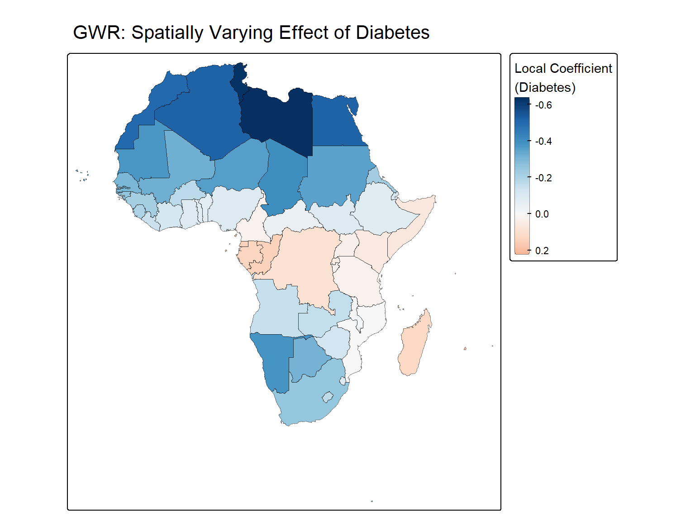
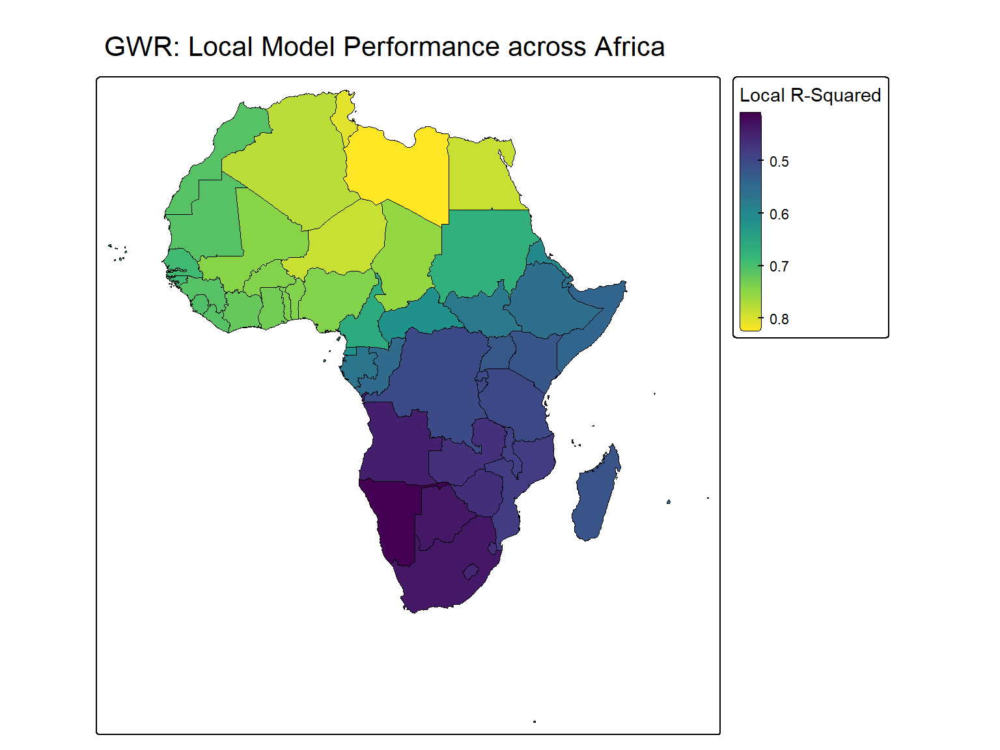

4Module 4: Spatial Regression and Epidemiological Risk Factor Analysis
This module connects health outcomes to lifestyle/genetic drivers. You will simulate covariates, build a global OLS model, test its residuals for spatial autocorrelation, and then fit a Geographically Weighted Regression (GWR) to capture spatially varying relationships.
4.1 Simulate Risk-Factor Covariates
Purpose: Link health outcomes to known epidemiological risk factors for pancreatic cancer (smoking, obesity, diabetes, alcohol use, family history urbanisation) for use in spatial regression exercise
For this tutorial, we simulate six covariates directly at the country level so the code is fully runnable without downloading external datasets. Because africa_health is a polygon layer where each row already represents one country (like incidence, TOTPOP etc), we do not need a raster data - we can generate one random value per row and append it directly with mutate()
In real research, replace these random draws with actual country-level estimates from sources such as the WHO Global Health Observatory (smoking, obesity, diabetes prevalence), IARC GLOBOCAN risk-factor tables, or national health surveys. These are typically small CSV/Excel downloads, joined to africa_health by country ISO code (ISO_3DIGIT) rather than simulated.
set.seed(898) # reproducibilityn <-nrow(africa_health)africa_health <- africa_health |>mutate(# Smoking prevalence (% of adult population) — WHO African region estimates# typically range ~10-25%; strongest modifiable risk factor for pancreatic cancersmoking_prev =round(runif(n, min =8, max =28), 1),# Obesity prevalence (% adults, BMI >= 30) — WHO Africa region estimates# range roughly 5-30% depending on urbanization/countryobesity_prev =round(runif(n, min =5, max =30), 1),# Type 2 diabetes prevalence (%) — longstanding diabetes is a well-established# pancreatic cancer risk factor; IDF Africa estimates ~3-10% typicallydiabetes_prev =round(runif(n, min =2, max =11), 1),# Alcohol consumption (litres pure alcohol per capita per year) —# heavy long-term use linked to chronic pancreatitis -> elevated riskalcohol_per_capita =round(runif(n, min =0.5, max =12), 1),# Family history / genetic predisposition proxy (% of cases with# first-degree relative history) — literature suggests ~5-10% of# pancreatic cancers have a hereditary componentfamily_history_prev =round(runif(n, min =3, max =10), 1),# Urbanization (%) — proxy for dietary/lifestyle transition,# often used as a covariate for NCD risk in African epidemiologyurbanization_pct =round(runif(n, min =15, max =85), 1) )head(africa_health[c("NAME", "smoking_prev", "obesity_prev", "diabetes_prev", "alcohol_per_capita", "family_history_prev", "urbanization_pct")])
Key parameters: - runif(n, min, max): draws n random values from a uniform distribution bounded to a realistic range for each covariate, loosely based on published prevalence ranges across African countries.
These covariates are simulated independently of incidence and of each other — they are not designed to correlate with pancreatic cancer rates. This is intentional: the goal is to demonstrate the spatial regression pipeline (data structure, model syntax, diagnostics), not to produce a real epidemiological finding.
Expected output: Six new columns appended to africa_health
Column
Description
Simulated range
smoking_prev
Adult smoking prevalence (%)
8–28%
obesity_prev
Adult obesity prevalence, BMI ≥ 30 (%)
5–30%
diabetes_prev
Type 2 diabetes prevalence (%)
2–11%
alcohol_per_capita
Alcohol consumption (litres pure alcohol/year)
0.5–12
family_history_prev
Cases with first-degree relative history (%)
3–10%
urbanization_pct
Urban population (%)
15–85%
4.2 Build Ordinary Least Squares (OLS) Regression
Purpose: Establish a global (non-spatial) baseline model relating pancreatic cancer incidence to lifestyle, genetic and demographic risk factors.
Expected output: A standard lm summary showing coefficients, standard errors, t-values, and p-values. R² indicates the proportion of variance explained globally.
This model prints a warning message. The \(R^2\) value is exactly 1 which creates room for concern. This is not a real spatial regression breakthrough, it is a classic case of data leakage through an identity relationship. Hence the perfect fit is a red flag not a good sign.
4.3 Diagnosing Data Leakage
The first ols model returned R-squared: 1, an F-statistic of 2.36e+31 and an explicit warning - essentialperfect fit: summary may be unreliable. A model that fits perfectly is almost always telling you that the outcome is mathematically derived from one or more of its own predictors. This is called data leakage
Step 1: Inspect the coefficients. Looking at the model summary, two variables stood out immediately:
female 9.302e-02 t = 1.005e+13 p < 2e-16
male 9.302e-02 t = 1.003e+13 p < 2e-16
Both coefficients are identical to four decimal figures, with t-value around \(10^{13}\). T-values that enormous are a signature of the model detecting an algebraic identity not a strong effect.
A correlation of 1 between incidence and gender confirms that incidence is a fixed linear function of female + male. Dividing one by the other reveals the exact relationship. Every single country returns the exact constant 0.09302326, meaning incidence was computed directly from male and female (or they share a common upstream calculation)
Including male and female as predictors makes it mathematically circular, the model is not learning but rather reversing an arithmetic formula.
Step 3: Screen every numeric variable for leakage
# Check all numeric columns systematically against incidencenumeric_cols <- africa_health |>st_drop_geometry() |># drop geometry — not numericselect(where(is.numeric)) |>select(-incidence) |># exclude the outcome itselfnames()cor_check <-sapply(numeric_cols, function(col) {cor(africa_health$incidence, africa_health[[col]], use ="complete.obs")})sort(abs(cor_check), decreasing =TRUE)
The output shows the leakage extends well beyond female/male. Almost every variable with |r|>0.85 shares a consistent naming pattern: age-banded (age*), year-indexed (yr*) and male/female-stratified (m*/f*). This strongly indicates they are all components of the same underlying case-count calculation that produced incidence.
4.4 Refined Model
Based on the correlation screen, we exclude every variable structurally tied to incidence calculation along with the non-informative row identifier. In their place we retain our six simulated risk-factor covariates.
Another thing worth mentioning in epidemiology is the raw incidence counts. We rarely run models on raw count data. Instead we will calculate an incidence rate (e.g cases per 100,000 people) before modelling.
This output provides an overall statistically insignificant model. Because the simulated covariates were generated purely as random noise (runif), the OLS model did exactly what it is supposed to do. It shows no statistical relationship between these covariates and the target variable.
Although all the covariates are randomly generated, obesity_prev and urbanization_pct are showing marginal significance. This is purely by chance because we can confirm from their estimate direction (-0.103 and -0.041) that the math contradicts the biology; higher obesity and urbanisation should increase pancreatic cancer risk.
4.5 Test for Spatial Residual Autocorrelation
Purpose: Check whether the OLS model’s residuals are spatially random. The core assumption of OLS is that its errors (residuals) are randomly distributed. If significant autocorrelation remains, OLS standard errors are biased and a spatial model (or GWR) is needed.
In spatial epidemiology, if our model is missing a key geographical variable, the model’s error will cluster together geographically. This is called Spatial Autocorrelation of Residuals
Global Moran I for regression residuals
data:
model: lm(formula = incidence_rate ~ smoking_prev + obesity_prev +
diabetes_prev + alcohol_per_capita + family_history_prev +
urbanization_pct, data = africa_health)
weights: lw
Moran I statistic standard deviate = 0.20896, p-value = 0.4172
alternative hypothesis: greater
sample estimates:
Observed Moran I Expectation Variance
-0.005685554 -0.027729069 0.011127988
Key parameters: - lm.morantest(): Applies Moran’s I to the regression residuals rather than the raw outcome.
Expected output: - If p < 0.05, residuals are spatially autocorrelated → OLS is misspecified, therefore a spatial model (like GWR) is required. - If p > 0.05, OLS residuals are spatially random (rare in epidemiology).
The Null hypothesis for this test is that the residuals are randomly distributed (no spatial autocorrelation). Because our p-vale is high, we conclude that the errors in the model are randomly distributed across the African continent. There is no statistically significant spatial autocorrelation in the residuals.
4.6 Geographically Weighted Regression (GWR)
Purpose: Fit local regression models that allow the relationship between cancer and lifestyle/genetic risk factors to vary across space (spatial non-stationarity).
# Step 1: Find optimal adaptive bandwidth (number of nearest neighbours)# This uses cross-validation to find best fitbw_adapt <-bw.gwr(formula = incidence_rate ~ smoking_prev + obesity_prev + diabetes_prev + alcohol_per_capita + family_history_prev + urbanization_pct,data = africa_health,approach ="CV", # Cross-validation approachkernel ="bisquare", # the shape of the spatial weight decayadaptive =TRUE# TRUE=find optimal no. of neigbours. FALSE = find distance)
***********************************************************************
* Package GWmodel *
***********************************************************************
Program starts at: 2026-08-12 13:46:55.337658
Call:
gwr.basic(formula = incidence_rate ~ smoking_prev + obesity_prev +
diabetes_prev + alcohol_per_capita + family_history_prev +
urbanization_pct, data = africa_health, bw = bw_adapt, kernel = "bisquare",
adaptive = TRUE)
Dependent (y) variable: incidence_rate
Independent variables: smoking_prev obesity_prev diabetes_prev alcohol_per_capita family_history_prev urbanization_pct
Number of data points: 54
***********************************************************************
* Results of Global Regression *
***********************************************************************
Call:
lm(formula = formula, data = data)
Residuals:
Min 1Q Median 3Q Max
-3.9009 -1.5714 -0.7732 0.8217 8.7829
Coefficients:
Estimate Std. Error t value Pr(>|t|)
(Intercept) 9.33286 3.00583 3.105 0.00322 **
smoking_prev 0.02596 0.07047 0.368 0.71426
obesity_prev -0.10385 0.05500 -1.888 0.06520 .
diabetes_prev -0.17452 0.18733 -0.932 0.35628
alcohol_per_capita -0.17127 0.12655 -1.353 0.18241
family_history_prev -0.08952 0.17952 -0.499 0.62036
urbanization_pct -0.04129 0.02130 -1.938 0.05859 .
---Significance stars
Signif. codes: 0 '***' 0.001 '**' 0.01 '*' 0.05 '.' 0.1 ' ' 1
Residual standard error: 2.807 on 47 degrees of freedom
Multiple R-squared: 0.1502
Adjusted R-squared: 0.04166
F-statistic: 1.384 on 6 and 47 DF, p-value: 0.2408
***Extra Diagnostic information
Residual sum of squares: 370.3139
Sigma(hat): 2.668599
AIC: 273.2152
AICc: 276.4152
BIC: 267.0389
***********************************************************************
* Results of Geographically Weighted Regression *
***********************************************************************
*********************Model calibration information*********************
Kernel function: bisquare
Adaptive bandwidth: 35 (number of nearest neighbours)
Regression points: the same locations as observations are used.
Distance metric: Euclidean distance metric is used.
****************Summary of GWR coefficient estimates:******************
Min. 1st Qu. Median 3rd Qu. Max.
Intercept 2.5414463 5.7074985 7.2222933 10.3176946 15.2724
smoking_prev -0.1729309 -0.0182621 0.0121007 0.0870956 0.1121
obesity_prev -0.2135095 -0.1292391 -0.0950674 -0.0555409 0.0517
diabetes_prev -0.6432196 -0.2850108 -0.1078285 0.0331103 0.2252
alcohol_per_capita -0.5719018 -0.1832194 -0.1390848 -0.0851088 0.1293
family_history_prev -0.2341325 -0.1174264 -0.0622756 -0.0099285 0.0802
urbanization_pct -0.0772384 -0.0509485 -0.0236476 -0.0171660 -0.0028
************************Diagnostic information*************************
Number of data points: 54
Effective number of parameters (2trace(S) - trace(S'S)): 25.72294
Effective degrees of freedom (n-2trace(S) + trace(S'S)): 28.27706
AICc (GWR book, Fotheringham, et al. 2002, p. 61, eq 2.33): 294.6998
AIC (GWR book, Fotheringham, et al. 2002,GWR p. 96, eq. 4.22): 239.3899
BIC (GWR book, Fotheringham, et al. 2002,GWR p. 61, eq. 2.34): 247.9558
Residual sum of squares: 180.6605
R-square value: 0.5853944
Adjusted R-square value: 0.1944111
***********************************************************************
Program stops at: 2026-08-12 13:46:55.364684
Key parameters: - bw.gwr(): adaptive = TRUE finds a bandwidth in number of neighbours rather than distance units. Better for irregularly sized polygons. - kernel = "bisquare": Weights drop to zero beyond the bandwidth, creating clean local windows. - gwr.basic(): Fits a separate weighted OLS at every polygon centroid.
Expected output: - Bandwidth value (gave 35 neighbours for country-level Africa data). - GWR diagnostics showing local R², coefficient ranges, and AICc values vs global OLS.
A bandwidth of 35 is huge for a spatial region of 54 countries. The model is forced to look at over half a continent to make a single prediction. The GWR coefficient estimates are given as a range because it changes depending on where you are on the map. In the global OLS the relationship for diabetes_pev is negative but GWR reveals that it changes in some part of the continent (min:-0.543 and max:0.225). This shows the relationship is unstable across space (But remember this is simulated data so the model is just chasing random noise).
The GWR \(R^2\) looks very high but that should not be the metric of interest because it is almost always high for GWR analysis. The parameter of interest is the AICc (Lower is better). Even the the GWR artificially inflated the \(R^2\), the AICc actually went up from 276.4 in the OLS to 294.7, this tells us that the GWR model is statistically worse. The OLS errors were randomly distributed and so the GWR was completely unnecessary.
4.7 Interpret and Visualize GWR Results
Purpose: Map local coefficient surfaces to see where each predictor matters most.
# gwr_model$SDF is an sf object containing local coefficientsgwr_sf <- gwr_model$SDF# Map the spatially varying coefficient for diabetestm_shape(gwr_sf) +tm_polygons(fill ="diabetes_prev",fill.scale =tm_scale_continuous(values ="-brewer.rd_bu", # Negative RdBu puts red at positive and Blue at negativemidpoint =0# Forces the white/neutral color to sit exactly at zero ),fill.legend =tm_legend(title ="Local Coefficient\n(Diabetes)"),col ='black',col_alpha =0.5, lwd =0.5 ) +tm_title("GWR: Spatially Varying Effect of Diabetes")

# Map the local model fit (Local R-squared)tm_shape(gwr_sf) +tm_polygons(fill ="Local_R2",fill.scale =tm_scale_continuous(values ="viridis" ),fill.legend =tm_legend(title ="Local R-Squared"),col ="black",lwd =0.5 ) +tm_title("GWR: Local Model Performance across Africa")

Key parameters: - midpoint = 0 in fill.scale = tm_scale_continuous() centers the colour scale at zero, making positive (red) and negative (blue) effects immediately visible.
Expected output: Two maps; one showing spatially varying coefficient diabetes_prev and the other showing the the area where the GWR model performs best (Local R2). Areas with red indicate a positive local association; blue indicates a negative local association for the diabetes_prev .
The spatial variation map shows smooth colour transitions across borders. Whiles this creates a beautiful map, remember our AICc score. Because the underlying data is purely random noise, this map is just a visualisation of the GWR algorithm ‘forcing’ a spatial pattern where none actually exists.
---editor: markdown: wrap: 72---# Module 4: Spatial Regression and Epidemiological Risk Factor Analysis {#sec-module4}This module connects health outcomes to lifestyle/genetic drivers. Youwill simulate covariates, build a global OLS model, test its residualsfor spatial autocorrelation, and then fit a Geographically WeightedRegression (GWR) to capture spatially varying relationships.```{r setup-m4}#| include: falselibrary(sf)library(terra)library(spdep)library(GWmodel)library(dplyr)library(mlspatial)library(tmap)data(africa_shp, package ="mlspatial")data(panc_incidence, package ="mlspatial")africa_health <-join_data( africa_shp |>mutate(across(c(NAME, COUNTRYAFF),~replace_values(.x, "Côte d'Ivoire"~"Cote d'Ivoire"))), panc_incidence, by ="NAME" )africa_health <-st_make_valid(africa_health)nb <-poly2nb(africa_health, row.names = africa_health$NAME, queen =TRUE)lw <-nb2listw(nb, style ="W", zero.policy =TRUE)```------------------------------------------------------------------------## Simulate Risk-Factor Covariates {#sec-simulate}**Purpose:** Link health outcomes to known epidemiological risk factorsfor pancreatic cancer (smoking, obesity, diabetes, alcohol use, familyhistory urbanisation) for use in spatial regression exerciseFor this tutorial, we **simulate** six covariates directly at thecountry level so the code is fully runnable without downloading externaldatasets. Because `africa_health` is a polygon layer where each rowalready represents one country (like `incidence`, `TOTPOP` etc), we donot need a raster data - we can generate one random value per row andappend it directly with `mutate()`**In real research**, replace these random draws with actualcountry-level estimates from sources such as the WHO Global HealthObservatory (smoking, obesity, diabetes prevalence), IARC GLOBOCANrisk-factor tables, or national health surveys. These are typicallysmall CSV/Excel downloads, joined to `africa_health` by country ISO code(`ISO_3DIGIT`) rather than simulated.```{r simulate-covariates}set.seed(898) # reproducibilityn <-nrow(africa_health)africa_health <- africa_health |>mutate(# Smoking prevalence (% of adult population) — WHO African region estimates# typically range ~10-25%; strongest modifiable risk factor for pancreatic cancersmoking_prev =round(runif(n, min =8, max =28), 1),# Obesity prevalence (% adults, BMI >= 30) — WHO Africa region estimates# range roughly 5-30% depending on urbanization/countryobesity_prev =round(runif(n, min =5, max =30), 1),# Type 2 diabetes prevalence (%) — longstanding diabetes is a well-established# pancreatic cancer risk factor; IDF Africa estimates ~3-10% typicallydiabetes_prev =round(runif(n, min =2, max =11), 1),# Alcohol consumption (litres pure alcohol per capita per year) —# heavy long-term use linked to chronic pancreatitis -> elevated riskalcohol_per_capita =round(runif(n, min =0.5, max =12), 1),# Family history / genetic predisposition proxy (% of cases with# first-degree relative history) — literature suggests ~5-10% of# pancreatic cancers have a hereditary componentfamily_history_prev =round(runif(n, min =3, max =10), 1),# Urbanization (%) — proxy for dietary/lifestyle transition,# often used as a covariate for NCD risk in African epidemiologyurbanization_pct =round(runif(n, min =15, max =85), 1) )head(africa_health[c("NAME", "smoking_prev", "obesity_prev", "diabetes_prev", "alcohol_per_capita", "family_history_prev", "urbanization_pct")])```**Key parameters:** - `runif(n, min, max)`: draws `n` random values froma uniform distribution bounded to a realistic range for each covariate,loosely based on published prevalence ranges across African countries.These covariates are simulated **independently of `incidence` and ofeach other** — they are not designed to correlate with pancreatic cancerrates. This is intentional: the goal is to demonstrate the spatialregression *pipeline* (data structure, model syntax, diagnostics), notto produce a real epidemiological finding.**Expected output:** Six new columns appended to `africa_health`| Column | Description | Simulated range ||------------------------|------------------------|------------------------||`smoking_prev`| Adult smoking prevalence (%) | 8–28% ||`obesity_prev`| Adult obesity prevalence, BMI ≥ 30 (%) | 5–30% ||`diabetes_prev`| Type 2 diabetes prevalence (%) | 2–11% ||`alcohol_per_capita`| Alcohol consumption (litres pure alcohol/year) | 0.5–12 ||`family_history_prev`| Cases with first-degree relative history (%) | 3–10% ||`urbanization_pct`| Urban population (%) | 15–85% |------------------------------------------------------------------------## Build Ordinary Least Squares (OLS) Regression {#sec-ols}**Purpose:** Establish a global (non-spatial) baseline model relatingpancreatic cancer incidence to lifestyle, genetic and demographic riskfactors.```{r ols-model}ols_model <-lm( incidence ~ smoking_prev + obesity_prev + diabetes_prev + alcohol_per_capita + family_history_prev + urbanization_pct + female + male + ageb + agec,data = africa_health)summary(ols_model)```**Key parameters:** - Formula syntax:`response ~ predictor1 + predictor2 + ...` - Interpretation: Positivecoefficients indicate higher expected incidence with higher predictorvalues.**Expected output:** A standard `lm` summary showing coefficients,standard errors, t-values, and p-values. R² indicates the proportion ofvariance explained globally.This model prints a warning message. The $R^2$ value is exactly **1**which creates room for concern. This is not a real spatial regressionbreakthrough, it is a classic case of data leakage through an identityrelationship. Hence the perfect fit is a red flag not a good sign.------------------------------------------------------------------------## Diagnosing Data Leakage {#sec-diagnose}The first **ols** model returned `R-squared: 1`, an F-statistic of`2.36e+31` and an explicit warning -`essentialperfect fit: summary may be unreliable`. A model that fitsperfectly is almost always telling you that the outcome ismathematically derived from one or more of its own predictors. This iscalled **data leakage****Step 1: Inspect the coefficients.** Looking at the model summary, twovariables stood out immediately:``` female 9.302e-02 t = 1.005e+13 p < 2e-16male 9.302e-02 t = 1.003e+13 p < 2e-16```Both coefficients are identical to four decimal figures, with t-valuearound $10^{13}$. T-values that enormous are a signature of the modeldetecting an algebraic identity not a strong effect.**Step 2: Test the suspected Identity directly**```{r test-suspect}cor(africa_health$incidence, africa_health$female + africa_health$male)head(africa_health$incidence / (africa_health$female + africa_health$male))```A correlation of 1 between `incidence` and gender confirms that`incidence` is a fixed linear function of `female + male`. Dividing oneby the other reveals the exact relationship. Every single countryreturns the exact constant `0.09302326`, meaning `incidence` wascomputed directly from `male` and `female` (or they share a commonupstream calculation)Including `male` and `female` as predictors makes it **mathematicallycircular**, the model is not learning but rather reversing an arithmeticformula.**Step 3: Screen every numeric variable for leakage**```{r check-cor}# Check all numeric columns systematically against incidencenumeric_cols <- africa_health |>st_drop_geometry() |># drop geometry — not numericselect(where(is.numeric)) |>select(-incidence) |># exclude the outcome itselfnames()cor_check <-sapply(numeric_cols, function(col) {cor(africa_health$incidence, africa_health[[col]], use ="complete.obs")})sort(abs(cor_check), decreasing =TRUE)```The output shows the leakage extends well beyond `female`/`male`. Almostevery variable with `|r|>0.85` shares a consistent naming pattern:age-banded (`age*`), year-indexed (`yr*`) and male/female-stratified(`m*`/`f*`). This strongly indicates they are all components of the sameunderlying case-count calculation that produced `incidence`.------------------------------------------------------------------------## Refined Model {#sec-ols-refine}Based on the correlation screen, we exclude every variable structurallytied to incidence calculation along with the non-informative rowidentifier. In their place we retain our six simulated risk-factorcovariates.Another thing worth mentioning in epidemiology is the raw incidencecounts. We rarely run models on raw count data. Instead we willcalculate an **incidence rate** (e.g cases per 100,000 people) beforemodelling.```{r refined-ols}africa_health <- africa_health |>mutate(incidence_rate = (incidence/TOTPOP)*100000)ols_refined <-lm( incidence_rate ~ smoking_prev + obesity_prev + diabetes_prev + alcohol_per_capita + family_history_prev + urbanization_pct,data = africa_health)summary(ols_refined)```This output provides an overall statistically insignificant model.Because the simulated covariates were generated purely as random noise(`runif`), the OLS model did exactly what it is supposed to do. It showsno statistical relationship between these covariates and the targetvariable.Although all the covariates are randomly generated, `obesity_prev` and`urbanization_pct` are showing marginal significance. This is purely bychance because we can confirm from their estimate direction (`-0.103`and `-0.041`) that the math contradicts the biology; higher obesity andurbanisation should increase pancreatic cancer risk.------------------------------------------------------------------------## Test for Spatial Residual Autocorrelation {#sec-residual-moran}**Purpose:** Check whether the OLS model's residuals are spatiallyrandom. The core assumption of OLS is that its errors (residuals) arerandomly distributed. If significant autocorrelation remains, OLSstandard errors are biased and a spatial model (or GWR) is needed.In spatial epidemiology, if our model is missing a key geographicalvariable, the model's error will cluster together geographically. Thisis called **Spatial Autocorrelation of Residuals**```{r moran-residuals}residual_moran <-lm.morantest(model = ols_refined,listw = lw,zero.policy =TRUE)print(residual_moran)```**Key parameters:** - `lm.morantest()`: Applies Moran's I to theregression residuals rather than the raw outcome.**Expected output:** - If p \< 0.05, residuals are spatiallyautocorrelated → OLS is misspecified, therefore a spatial model (likeGWR) is required. - If p \> 0.05, OLS residuals are spatially random(rare in epidemiology).The Null hypothesis for this test is that the residuals are randomlydistributed (no spatial autocorrelation). Because our p-vale is high, weconclude that the errors in the model are randomly distributed acrossthe African continent. There is no statistically significant spatialautocorrelation in the residuals.------------------------------------------------------------------------## Geographically Weighted Regression (GWR) {#sec-gwr}**Purpose:** Fit local regression models that allow the relationshipbetween cancer and lifestyle/genetic risk factors to vary across space(spatial non-stationarity).```{r gwr-model}# Step 1: Find optimal adaptive bandwidth (number of nearest neighbours)# This uses cross-validation to find best fitbw_adapt <-bw.gwr(formula = incidence_rate ~ smoking_prev + obesity_prev + diabetes_prev + alcohol_per_capita + family_history_prev + urbanization_pct,data = africa_health,approach ="CV", # Cross-validation approachkernel ="bisquare", # the shape of the spatial weight decayadaptive =TRUE# TRUE=find optimal no. of neigbours. FALSE = find distance)cat("Optimal adaptive bandwidth:", bw_adapt, "neighbors\n")# Step 2: Fit GWR modelgwr_model <-gwr.basic(formula = incidence_rate ~ smoking_prev + obesity_prev + diabetes_prev + alcohol_per_capita + family_history_prev + urbanization_pct,data = africa_health,bw = bw_adapt,kernel ="bisquare",adaptive =TRUE,)# Print summary (includes global OLS + local GWR diagnostics)print(gwr_model)```**Key parameters:** - `bw.gwr()`: `adaptive = TRUE` finds a bandwidth innumber of neighbours rather than distance units. Better for irregularlysized polygons. - `kernel = "bisquare"`: Weights drop to zero beyond thebandwidth, creating clean local windows. - `gwr.basic()`: Fits aseparate weighted OLS at every polygon centroid.**Expected output:** - Bandwidth value (gave 35 neighbours forcountry-level Africa data). - GWR diagnostics showing local R²,coefficient ranges, and AICc values vs global OLS.A bandwidth of 35 is huge for a spatial region of 54 countries. Themodel is forced to look at over half a continent to make a singleprediction. The GWR coefficient estimates are given as a range becauseit changes depending on where you are on the map. In the global OLS therelationship for `diabetes_pev` is negative but GWR reveals that itchanges in some part of the continent (`min:-0.543` and `max:0.225`).This shows the relationship is unstable across space (But remember thisis simulated data so the model is just chasing random noise).The GWR $R^2$ looks very high but that should not be the metric ofinterest because it is almost always high for GWR analysis. Theparameter of interest is the AICc (Lower is better). Even the the GWRartificially inflated the $R^2$, the AICc actually went up from 276.4 inthe OLS to 294.7, this tells us that the GWR model is statisticallyworse. The OLS errors were randomly distributed and so the GWR wascompletely unnecessary.------------------------------------------------------------------------## Interpret and Visualize GWR Results {#sec-gwr-viz}**Purpose:** Map local coefficient surfaces to see **where** eachpredictor matters most.```{r gwr-maps}# gwr_model$SDF is an sf object containing local coefficientsgwr_sf <- gwr_model$SDF# Map the spatially varying coefficient for diabetestm_shape(gwr_sf) +tm_polygons(fill ="diabetes_prev",fill.scale =tm_scale_continuous(values ="-brewer.rd_bu", # Negative RdBu puts red at positive and Blue at negativemidpoint =0# Forces the white/neutral color to sit exactly at zero ),fill.legend =tm_legend(title ="Local Coefficient\n(Diabetes)"),col ='black',col_alpha =0.5, lwd =0.5 ) +tm_title("GWR: Spatially Varying Effect of Diabetes")# Map the local model fit (Local R-squared)tm_shape(gwr_sf) +tm_polygons(fill ="Local_R2",fill.scale =tm_scale_continuous(values ="viridis" ),fill.legend =tm_legend(title ="Local R-Squared"),col ="black",lwd =0.5 ) +tm_title("GWR: Local Model Performance across Africa")```**Key parameters:** - `midpoint = 0` in`fill.scale = tm_scale_continuous()` centers the colour scale at zero,making positive (red) and negative (blue) effects immediately visible.**Expected output:** Two maps; one showing spatially varying coefficient`diabetes_prev` and the other showing the the area where the GWR modelperforms best (`Local R2`). Areas with red indicate a positive localassociation; blue indicates a negative local association for the`diabetes_prev` .The spatial variation map shows smooth colour transitions acrossborders. Whiles this creates a beautiful map, remember our **AICc**score. Because the underlying data is purely random noise, this map isjust a visualisation of the GWR algorithm 'forcing' a spatial patternwhere none actually exists.------------------------------------------------------------------------## Module 4 Checklist {#sec-m4-check .unnumbered}- [ ] Extracted environmental covariates from raster data- [ ] Built and interpreted an OLS regression model- [ ] Tested OLS residuals for spatial autocorrelation- [ ] Fitted a GWR model with adaptive bandwidth- [ ] Mapped local coefficient surfaces**Next:** Proceed to [Module 5: Machine Learning for SpatialEpidemiology](05-ml.qmd).